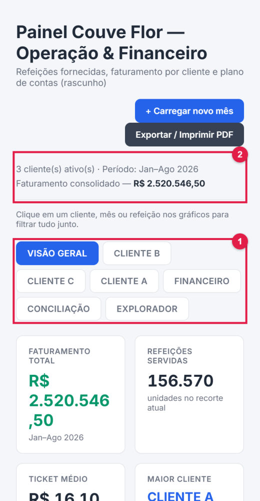
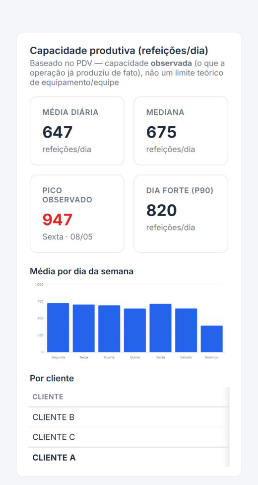
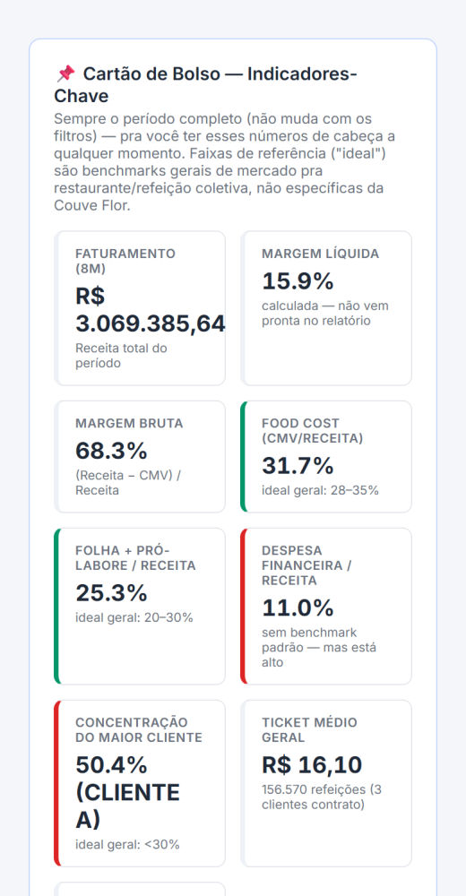
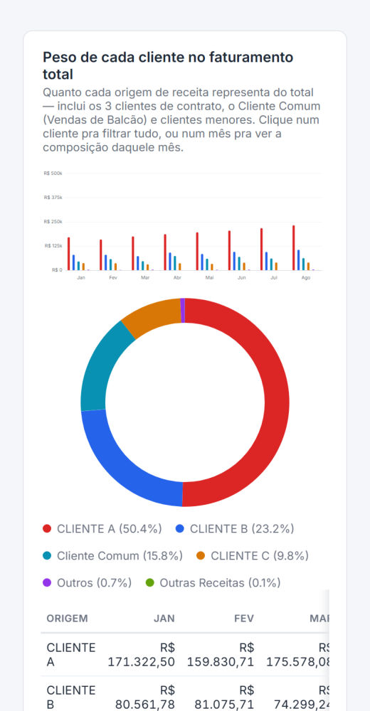
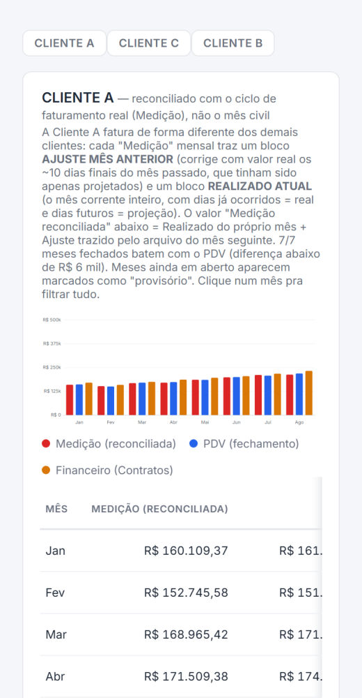
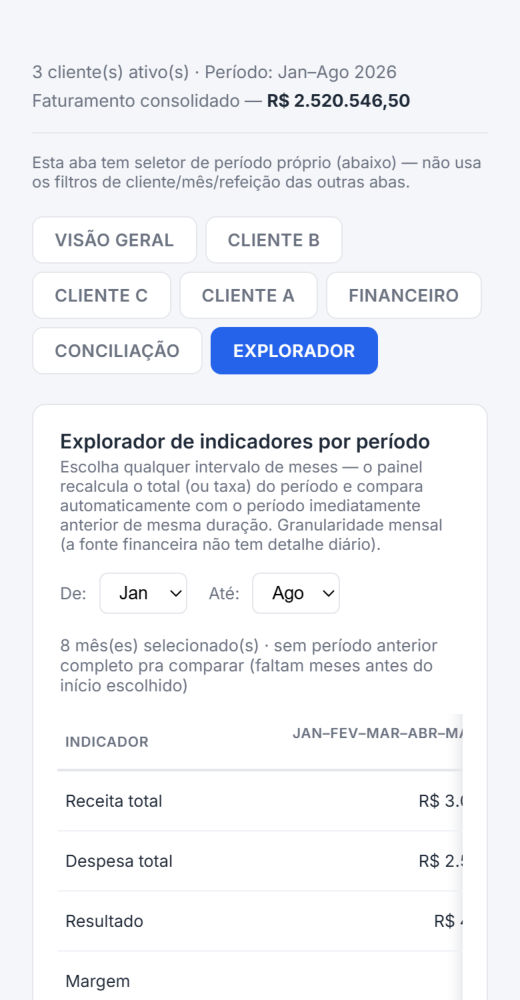

PORTA 08 · DASHBOARD INTERATIVO
A empresa saiu da planilha e coube numa tela.
Todo mês chegavam três arquivos diferentes: o fechamento das refeições, o plano de contas do consultor e a medição do maior cliente. Agora eles viram um painel só. Importe os arquivos, clique nos gráficos para filtrar e mexa no simulador. (Dados 100% fictícios.)
Painel Couve FlorOperação & Financeiro · Jan–Ago
Faturamento mensal por clienteclique numa barra, cliente ou mês para filtrar tudo
Importe o Fechamento PDV para ver a operação
Cartão de Bolsoborda verde = dentro da faixa de referência
Leitura Estratégicaachados calculados, cada um com "o que fazer"
Importe o Plano de Contas para ver o financeiro
Conciliação · Cliente Ao que foi servido foi faturado?
Importe a Medição para conferir o faturamento
O PAINEL DE VERDADE
Sete abas, um negócio inteiro.
Prints do guia do painel, com dados fictícios (Cliente A, B, C). Telas de login omitidas.

1 Visão Geral e abas 
2 Capacidade produtiva 
3 Cartão de Bolso 
4 Peso de cada cliente 
5 Conciliação 
6 Explorador de períodos
FICHA TÉCNICA
Painel Couve Flor — Operação & Financeiro
- Problema
- Os números da empresa estavam espalhados em três fontes que não conversavam: o fechamento diário das refeições, o relatório mensal do consultor e a medição do maior cliente. Cruzar tudo à mão tomava tempo e escondia erros de faturamento.
- Solução
- Um painel com sete abas: Visão Geral, uma aba por cliente, Financeiro, Conciliação e Explorador. Quase tudo é clicável: clicar num cliente, mês ou refeição filtra o painel inteiro.
- Leitura Estratégica
- Achados calculados a cada mês: cliente com 40% ou mais da receita (risco crítico), margem que mudou 5 p.p. ou mais, food cost acima de 35% e despesa financeira que disparou. Cada um com "o que fazer".
- Conciliação
- Confere Medição × PDV × Financeiro para achar refeição servida e não faturada. Mês sem documento aparece como "aguardando" — o painel nunca inventa valor.
- Segurança
- Repositório privado e painel atrás do Cloudflare Access (Zero Trust): só e-mails autorizados entram, com código enviado por e-mail a cada login. Deploy automático a cada push, publicando só a pasta final.
- Stack
- JavaScript puro · gráficos SVG feitos à mão · Python (build e extração de PDF/Excel) · validação de somas e teste de renderização · Cloudflare Workers + Access · GitHub Actions
- Código
- Privado (repositório couveflor-dashboard): aqui só a descrição, as telas e uma simulação.